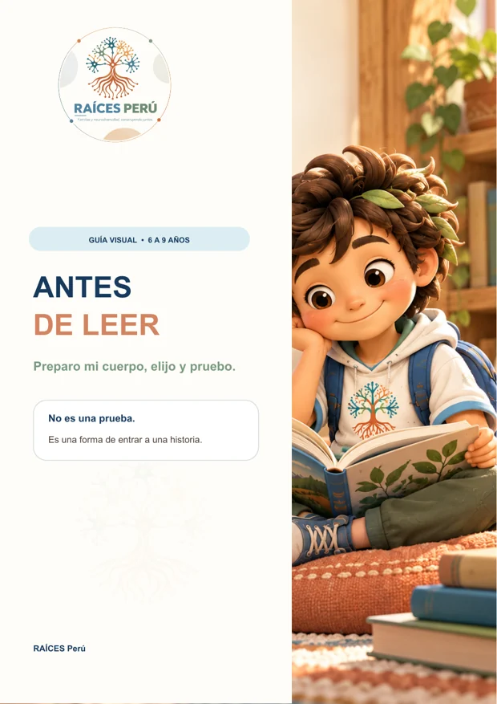
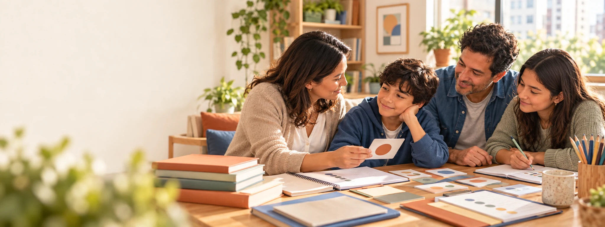
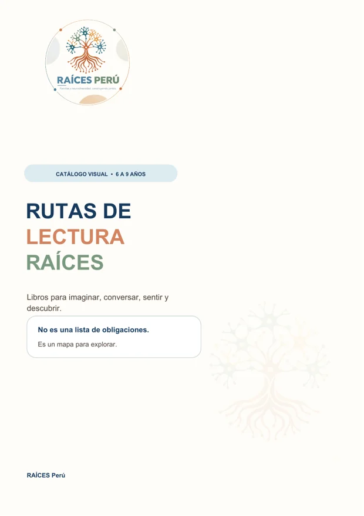
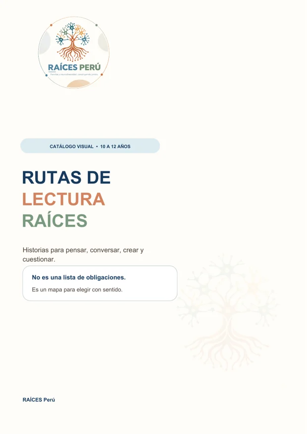
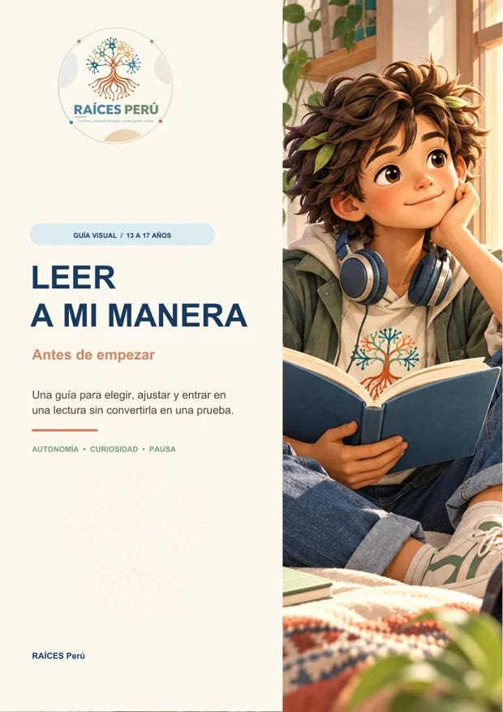
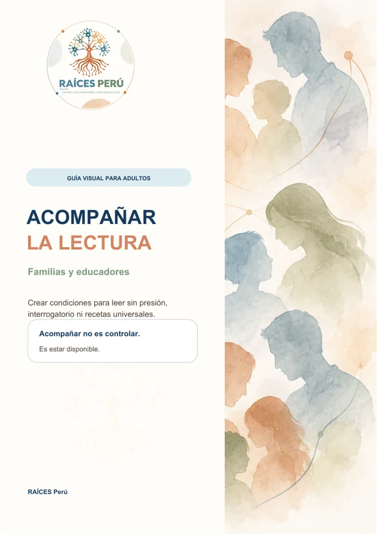

Guía visual · 6 a 9 años
Antes de leer
Prepara el cuerpo, ayuda a elegir y propone una entrada amable a la historia, sin convertir la lectura en prueba.
 RAÍCES PERÚFamilias y neurodiversidad
RAÍCES PERÚFamilias y neurodiversidad
Biblioteca RAÍCES
Cada manual convierte una necesidad cotidiana en orientaciones breves, preguntas y experiencias para elegir. La edad orienta; la persona, su interés y su momento deciden.
Explorar manuales
Manuales disponibles
Puede abrirlos en pantalla o guardarlos en su dispositivo. Todos están diseñados en páginas grandes, con estructura visual y lenguaje cercano.

Guía visual · 6 a 9 años
Prepara el cuerpo, ayuda a elegir y propone una entrada amable a la historia, sin convertir la lectura en prueba.

Catálogo visual · 6 a 9 años
Ocho libros organizados por rutas para imaginar, conversar, reconocer diferencias y explorar emociones.

Catálogo visual · 10 a 12 años
Historias para pensar, conversar, crear y cuestionar mediante cuatro rutas de exploración elegibles.

Guía visual · 13 a 17 años
Una preparación breve que cuida la autonomía, el propósito y la forma personal de entrar a un texto.

Manual de acompañamiento · Personas adultas
Orientaciones para observar, escuchar, ajustar apoyos y conversar sin controlar la experiencia lectora.
Criterio RAÍCES
Estos materiales ofrecen posibilidades, no diagnósticos ni resultados garantizados. Escuchamos antes de intervenir, observamos antes de asumir y ajustamos cada propuesta a la persona y su contexto.
Creación responsable
RAÍCES estudia evidencia y referencias editoriales para crear materiales originales. No copia ni redistribuye contenido de terceros. Cuando una situación lo requiere, estos recursos conectan con profesionales; no los reemplazan.